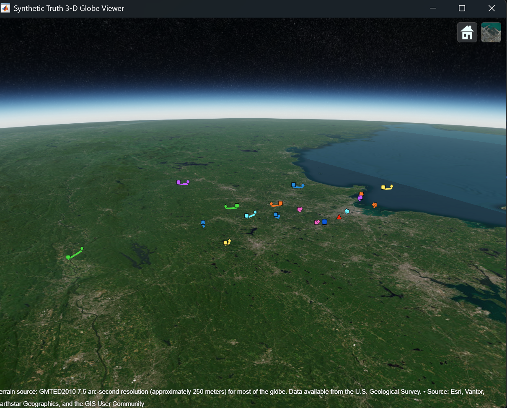
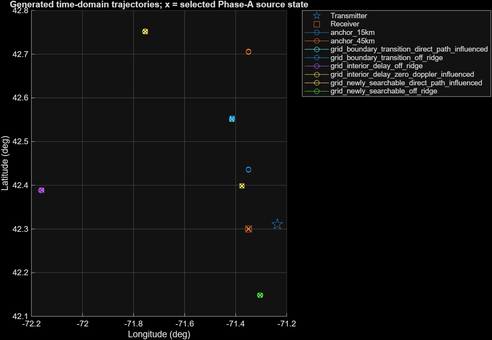
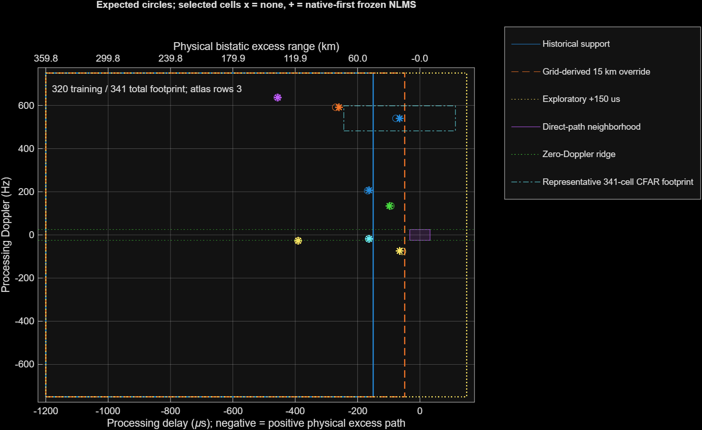
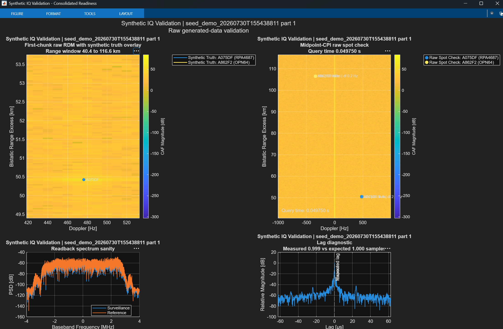

Real recordings are valuable
They contain the actual HDTV background, clutter, interference, and channel relationship that a clean simulation misses.
Report 02A · controlled synthetic experiment
A human-readable account of declared truth, delay/Doppler placement, surveillance-only injection, traceable session packaging, and the limits of a synthetic recovery experiment.
They contain the actual HDTV background, clutter, interference, and channel relationship that a clean simulation misses.
A live aircraft usually does not bring a known echo gain, known scattering behavior, a declared map cell, or a stable paired control scene.
It asks: given this declared path and this unchanged background, does the downstream experiment put any retained candidate near the declared location?
Each step produces an artifact that the next step needs. The chain is deliberately designed so the known answer travels with the package but does not steer map formation or detection.

Can the experiment define target motion before any downstream signal-processing outcome is known?
The generator creates a truth bundle from synthetic waypoints or capture-backed ADS-B, including motion and output records for later package use.
A known intended target removes the ambiguity of deciding after the fact whether a map feature “looks like” an aircraft.
Declare and save truth first; reuse it for echo synthesis and only later for post-hoc association.
Truth-generation code, the seed-backed walkthrough, trajectory visual, and package truth JSON/manifest contract. SRC-02A-01/02/03/07
Normalize the truth source into target position, velocity, timing, and metadata records that can feed geometry and file-writing helpers.
The trajectory describes the synthetic target placed into the experiment. It does not calibrate aircraft scattering, receive power, or a live-aircraft path.


Can target motion be turned into a repeatable radio echo at a known map location?
The implementation derives excess path and rate, applies wideband propagation and fractional delay, rotates phase for Doppler, RMS-normalizes the echo, and adds declared gain.
The known target can be evaluated against a declared delay-Doppler window, not a visual impression of a map.
Validate target geometry and support eligibility before interpreting downstream candidates or absences.
Real-background synthesis helper, current placement maps, and the historical generator validation dashboard. SRC-02A-05/08 · FIG-02A-02/03/04
Use Rtx + Rrx − L for excess range and its rate for Doppler; use phased.WidebandFreeSpace and FIR fractional delay in the real-background flow. SRC-02A-05/10
Generator placement validation is not a detector result. It does not model every field reflection, calibrated RCS, aircraft aspect change, or measured direct-path-to-target ratio.

What ambiguity disappears when an injected case is paired with the same real recording before injection?
The injected and control packages share the background. The injected case changes CH1 with the declared target echo; CH2 reference remains preserved.
The experiment can isolate an injection/replay question from scene-to-scene variation and preserve a clear record of what changed.
Write paired data plus manifests, truth JSON, role metadata, and readback fields so a reviewer can reconstruct the controlled condition.
Real-background suite generator, its design note, package manifests, and truth-blind downstream entry points. SRC-02A-05/07/09
Copy recorded channels, inject the calculated echo only in surveillance, retain an untouched control, write the package, then run the detector without truth-driven changes.
The controlled package cannot replace measured aircraft echo, field antenna/RF validation, operational false-alarm assessment, tracking, or localization evidence.
The source-faithful project figures recovered for this task do not include a raw waveform or range-Doppler image labelled “before injection” beside the matching “after injection.” The visual below is therefore a source-derived channel contract, not a reconstructed plot. It shows exactly what the real-background generator is designed to change.
This is the background control for the matching injected case.
Truth, configuration, and package manifest identify the added echo and its intended geometry.
This package visual is an explanatory representation of the source-defined file contract in generateRealBackgroundSyntheticSuite.m and its design note. It is not an original exported generator figure. SRC-02A-07
The recovered sources do not provide a calibrated aircraft RCS, direct-path-to-target receive-power ratio, or complete field-multipath model.
Injection happens in recorded data. It does not verify antenna roles, direct-path/reference quality, lock, drops, gain/headroom, or capture integrity.
A retained candidate near declared truth is not operational Pd/Pfa, a map-wide false-alarm rate, product selection, tracking, or localization.
Report 02A supplies a reviewable synthetic package. Report 03_AnalysisPipelineAndGateRebuild.html owns the truth-blind pipeline rule: truth must not steer map formation, CFAR, NMS, or retained-candidate generation. Report 05_StrongestEvidence_G4RRecoveryStudy.html owns the accepted G4-R interpretation.
Known target truth, a real-background injection method, controlled pairs, and the package needed to replay a declared experiment.
Independent map formation, detector configuration, support handling, and retained candidates before the truth association step.
The exact bounded result: 8/8 associated injected targets under native-first frozen NLMS; 0/8 under no mitigation; no associated candidate in the corresponding 16 target-specific control windows. That result is linked here, not reinterpreted here.
| Purpose | Original entry or source | Inputs / outputs | Execution in this report |
|---|---|---|---|
| Seed-backed walkthrough | SyntheticHDTVSimulation/seedBackedSyntheticHDTVSessionWalkthrough.m SRC-02A-02 | Seed waveform and declared truth → synthetic dual-channel session and validation context. | Inspected; not run. |
| Truth construction | helperSyntheticGenerateTruth.m SRC-02A-03 | Waypoints or capture ADS-B → normalized truth bundle and target metadata. | Inspected; not run. |
| Seed-backed channels | helperSyntheticSynthesizeSeedBackedChannels.m SRC-02A-04 | Seed/reference/direct path/target echo → CH1 and CH2 construction. | Inspected; not run. |
| Real-background injection | helperSyntheticSynthesizeRealBackgroundTargetEchoes.m SRC-02A-05 | Preserved recording + geometry + gain → surveillance-only fractional-delay echo injection. | Inspected; not run. |
| Native target-echo propagation | helperSyntheticSynthesizeToolboxTargetEchoes.m SRC-02A-10 | Measurement-space truth + seed → wideband propagation, FIR fractional delay, RMS normalization, and declared gain. | Inspected; not run. |
| Echo-only conditioning | helperSyntheticBuildConditionedEchoSeed.m SRC-02A-06 | Seed waveform → optional target-echo-only pilot-line conditioning and RMS match. | Inspected; not run. |
| Package generation | generateRealBackgroundSyntheticSuite.m SRC-02A-07 | Captured pair + declared conditions → paired files, truth, manifests, and validation/readback artifacts. | Inspected; not run. |
| Seed-backed package generation | generateSyntheticHDTVSession.m SRC-02A-11 | Scenario, truth, and seed fixture → packaged seed-backed session, traceability truth, manifest, and optional archive. | Inspected; not run; separate mode from real-background injection. |
| Truth-blind replay and association | BistaticDataAnalysis/runDetectorReplaySweep.m; runDetectionTruthDiagnostics.m; assessTruthVsDetections.m SRC-02A-09 | Package → maps/candidates first; truth association afterward. | Referenced for boundary; not run. |
The declared target position, motion, timing, and expected geometry used to create and later evaluate a controlled synthetic case.
Transmitter-to-target plus target-to-receiver distance, minus the direct transmitter-to-receiver distance. It determines expected bistatic delay.
The frequency change caused by changing path length. In this experiment, excess-path rate determines the declared bistatic Doppler.
A delay that is not limited to a whole number of samples, allowing an echo to be placed more precisely in time.
The same real recording with no declared synthetic echo added. It is a target-specific comparison, not a map-wide false-alarm experiment.
Map and detector steps run without using target truth. Truth is used only after candidates are retained, for evaluation.